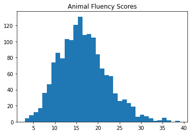
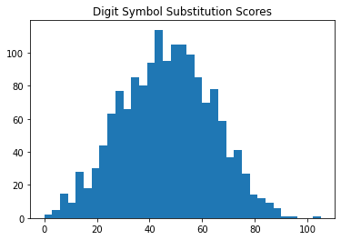
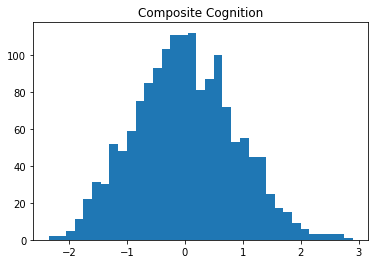
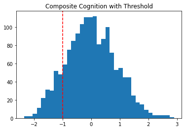
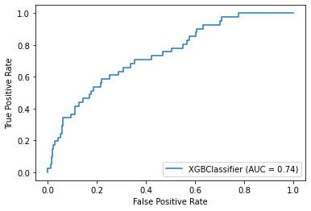
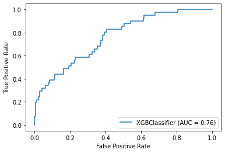
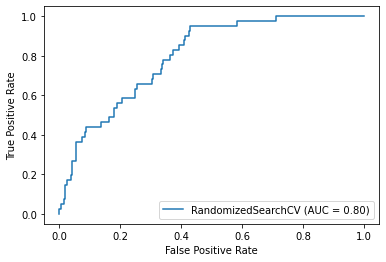

In this blog post, I build a machine learning model to predict possible cases of cognitive impairment / dementia in a population of individuals over the age of 60. My data for this model comes from the 2013-2014 NHANES (National Health and Nutrition Examination Survey) study cohort, which is a nationally representative, longitudinal study of health in the US.
As an outcome measure, I’ll create a composite index of cognition by combining data from the Animal Fluency and Digit Symbol Substitution tasks. As predictors of this outcome, I’ll pull together variables that seem relevant to predicting dementia at a population level. For example, variables like age, race, gender, BMI, depression symptoms, alcohol use, blood lead levels, etc.
I’ll use xgboost to train the model, and I’ll walk through a hypothetical use-case for the model, discussing what might be the appropriate model bias (e.g., specificity/recall).
import wget
import pandas as pd
import numpy as np
import seaborn as sns
from matplotlib import pyplot as plt
The data is obtained from the NHANES website, for the 2013-2014 study cohort.
Data files are converted from XPT to CSV.
# Base path for downloading
base = 'https://wwwn.cdc.gov/Nchs/Nhanes/2013-2014/'
# Files to download
files = ['DEMO_H.XPT', 'CFQ_H.XPT', 'COT_H.XPT', 'BPX_H.XPT',
'BMX_H.XPT', 'MGX_H.XPT', 'CSX_H.XPT', 'HSQ_H.XPT',
'DIQ_H.XPT', 'DPQ_H.XPT', 'ALQ_H.XPT', 'SLQ_H.XPT',
'VID_H.XPT', 'VITB12_H.XPT', 'DBQ_H.XPT',
'PBCD_H.XPT', 'BIOPRO_H.XPT', 'INQ_H.XPT']
for file in files:
xpt_file = 'data/' + file
csv_file = xpt_file + '.csv'
wget.download(base + file, xpt_file)
!xport $xpt_file > $csv_file
100% [..........................................................................] 1223920 / 1223920
Read the files into a single dataframe by joining on participant ID (SEQN).
# Read first file
df = pd.read_csv('data/DEMO_H.XPT.csv')
# Loop through remaining files and join together
for file in files[1:]:
tmp = pd.read_csv('data/' + file + '.csv')
df = df.join(tmp.set_index('SEQN'), on='SEQN')
# Drop duplicates by SEQN
df.drop_duplicates(subset='SEQN', keep='first', inplace=True)
df.shape
(10175, 393)
Cognitive functioning data
This dataset contains multiple tests on which cognitive functioning was assessed. For this analysis, I will be considering the Animal Fluency Task (AFT) and the Digit Symbol Substitution Task (DSST). These tasks measure different aspects of cognition.
In past research, these tasks have each been shown to discriminate between populations with and without dementia. For example, see Howe (2007) or Rosano et al. [2016].
I will take these measures and combine them to create a composite measure of cognition. By creating a composite, I will be able to reduce measurement noise or bias.
To create a composite, I will first “standardize” each score using z-score normalization so that each score represents a standardized difference from the the mean of its distribution. I will then take the average of the standardized scores.
Number of observations
According to the documentation on NHANES, there should be 1661 individuals with scores on the Animal Fluency Task (AFT), and 1592 participants with scores on the Digit Symbol Substitution Task (DSST). Here we can see that the intersection of individuals who completed AFT and DSST tasks is 1575.
print(len(df)) # All participants in the dataset
print(len(df[df['RIDAGEYR'] > 60])) # All participants over 60
print(df['CFDAST'].notnull().sum()) # Participants with AFT scores
print(df['CFDDS'].notnull().sum()) # Participants with DSST scores
len(df[df['CFDAST'].notnull() & df['CFDDS'].notnull()]) # Individuals with both AFT and DSST
df2 = df[df['CFDAST'].notnull() & df['CFDDS'].notnull()].reset_index()
10175
1729
1661
1592
Score distributions
Below we can see that the distribution of scores on each task are approximately normal.
plt.hist(df2['CFDAST'], bins=35)
plt.title("Animal Fluency Scores")
plt.show()
plt.hist(df2['CFDDS'], bins=35)
plt.title("Digit Symbol Substitution Scores")

Text(0.5, 1.0, 'Digit Symbol Substitution Scores')

Composite scoring
First I’ll standardize each of the test columns.
from scipy.stats import zscore
df2['DSST_z'] = df2['CFDDS'].pipe(zscore)
df2['AFT_z'] = df2['CFDAST'].pipe(zscore)
Next, I’ll create a composite by taking the average of the two standardized scores.
df2['COG'] = (df2['DSST_z'] + df2['AFT_z']) / 2
Finally, I’ll check to make sure that the distribution of composite scores is still normal.
plt.hist(df2['COG'], bins=35)
plt.title("Composite Cognition")
Text(0.5, 1.0, 'Composite Cognition')

What is “low” cognition?
Since these are standardized scores, we can say that low cognition represents 1 standardized unit below the mean.
plt.hist(df2['COG'], bins=35)
plt.axvline(x=-1, color='red', linestyle='--')
plt.title("Composite Cognition with Threshold")
Text(0.5, 1.0, 'Composite Cognition with Threshold')

I’ll create a variable to track this classification.
df2['COG_low'] = df2['COG'] < -1
Model features
I’ll collect all the features that I think might be interesting.
features = {# Composite cognition score
'COG': 'cognition',
'COG_low': 'cognition_impaired',
# Demographics
'RIAGENDR': 'gender',
'RIDAGEYR': 'age',
'RIDRETH1': 'race',
# Poverty level
'INDFMMPI': 'poverty',
# Body mass index
'BMXBMI': 'bmi',
# Alcohol use
'ALQ120Q': 'alcohol_days',
# Blood vitamin levels
'LBXVIDMS': 'vit_d',
'LBDB12': 'vit_b12',
# Diet
'DBQ700': 'diet_healthy',
# Lead
'LBXBPB': 'blood_lead',
# Blood nicotine metabolite
'LBXCOT': 'cotinine',
# Grip strength
# https://wwwn.cdc.gov/Nchs/Nhanes/2013-2014/MGX_H.htm#MGDCGSZ
'MGDCGSZ': 'grip_strength',
# Smell test
'CSXCHOOD': 'smell_choco',
'CSXSBOD': 'smell_strawberry',
'CSXSMKOD': 'smell_smoke',
'CSXLEAOD': 'smell_leather',
'CSXSOAOD': 'smell_soap',
'CSXGRAOD': 'smell_grape',
'CSXONOD': 'smell_onion',
'CSXNGSOD': 'smell_gas',
# Health in general
'HSD010': 'health_general',
# Depression screener
'DPQ010': 'dep_1',
'DPQ020': 'dep_2',
'DPQ030': 'dep_3',
'DPQ040': 'dep_4',
'DPQ050': 'dep_5',
'DPQ060': 'dep_6',
'DPQ070': 'dep_7',
'DPQ080': 'dep_8',
'DPQ090': 'dep_9',
# Sleep
'SLD010H': 'sleep',
# Heart rate
'BPXPLS': 'heart_rate'
}
df2 = df2.loc[:, list(features)]
df2 = df2.rename(columns=features)
Recoding variables
Some of the features need to be combined. For example, the smell tests can all be combined into a single “smell test” score; the depression scale can be converted into a single depression score.
On some features the values are numeric but not ordinal. For example, on the depression scale scores 0-3 represent increasing levels of depression symptom severity, but a score of “9” means “don’t know” and a score of “7” means “refused”. This will be important to catch in the variable coding.
Depression items
First I’ll score the depression items. I’ll take the mean of all the items responded to.
items = ['dep_1', 'dep_2', 'dep_3', 'dep_4',
'dep_5', 'dep_6', 'dep_7', 'dep_8',
'dep_9']
def score_depression(x):
scores = []
for item in items:
value = x[item]
if value < 4:
scores.append(value)
if len(scores) == 0:
return None
else:
return np.mean(scores)
df2.loc[:, 'dep_tot'] = df2.apply(score_depression, axis=1)
df2.drop(items, axis=1, inplace=True)
Smell test
Next, I’ll score the smell test items. Each item has one correct response and several incorrect responses. I’ll take the mean number of correct responses.
items = ['smell_choco', 'smell_strawberry',
'smell_smoke', 'smell_leather',
'smell_soap', 'smell_grape',
'smell_onion', 'smell_gas']
def score_smell(x):
scores = []
if x['smell_choco'] == 2:
scores.append(1)
elif ~np.isnan(x['smell_choco']):
scores.append(0)
if x['smell_strawberry'] == 1:
scores.append(1)
elif ~np.isnan(x['smell_strawberry']):
scores.append(0)
if x['smell_smoke'] == 3:
scores.append(1)
elif ~np.isnan(x['smell_smoke']):
scores.append(0)
if x['smell_leather'] == 3:
scores.append(1)
elif ~np.isnan(x['smell_leather']):
scores.append(0)
if x['smell_soap'] == 1:
scores.append(1)
elif ~np.isnan(x['smell_soap']):
scores.append(0)
if x['smell_grape'] == 2:
scores.append(1)
elif ~np.isnan(x['smell_grape']):
scores.append(0)
if x['smell_onion'] == 3:
scores.append(1)
elif ~np.isnan(x['smell_onion']):
scores.append(0)
if x['smell_gas'] == 4:
scores.append(1)
elif ~np.isnan(x['smell_gas']):
scores.append(0)
if len(scores) == 0:
return None
else:
return np.nanmean(scores)
df2.loc[:, 'smell_tot'] = df2.apply(score_smell, axis=1)
df2.drop(items, axis=1, inplace=True)
Others
Replace “Don’t know” and “Refused” with missing.
df2['health_general'].replace([9.0, 7.0], [np.nan, np.nan], inplace=True)
df2['sleep'].replace([99.0, 77.0], [np.nan, np.nan], inplace=True)
df2['alcohol_days'].replace([999.0, 777.0], [np.nan, np.nan], inplace=True)
df2['diet_healthy'].replace([9.0, 7.0], [np.nan, np.nan], inplace=True)
Missing values
How many values are missing in each column?
print('% missing values')
round(df2.isnull().sum() / len(df2) * 100)
% missing values
cognition 0.0
cognition_impaired 0.0
gender 0.0
age 0.0
race 0.0
poverty 11.0
bmi 1.0
alcohol_days 18.0
vit_d 3.0
vit_b12 4.0
diet_healthy 0.0
blood_lead 51.0
cotinine 4.0
grip_strength 11.0
health_general 2.0
sleep 0.0
heart_rate 3.0
dep_tot 2.0
smell_tot 3.0
dtype: float64
Preprocessing
I will use median imputation for missing numeric values.
from sklearn.compose import ColumnTransformer
from sklearn.preprocessing import LabelEncoder, OneHotEncoder
from sklearn.impute import SimpleImputer
X = df2.drop(['cognition', 'cognition_impaired'], axis=1) # Features
y = df2['cognition'] # Outcome raw
y2 = df2['cognition_impaired'] # Outcome binary
ct = ColumnTransformer(
[
#('ohe', OneHotEncoder(sparse=False, handle_unknown='ignore'), [1, 3]),
('impute', SimpleImputer(strategy='median'), [0, -2]),
],
remainder='passthrough'
)
X_arr = ct.fit_transform(X)
XGBoost model
Next I’ll train a model to predict the composite cognition score using xgboost.
I’ll stratify the train-test split on the classification of healthy/impaired cognition.
from xgboost import XGBRegressor, XGBClassifier
from xgboost import plot_importance
from sklearn.model_selection import train_test_split, RandomizedSearchCV
from sklearn.metrics import accuracy_score, precision_score, recall_score, roc_curve, roc_auc_score, plot_roc_curve, confusion_matrix
X_train, X_test, y_train, y_test = train_test_split(X_arr, y2,
test_size=0.2,
random_state=42,
stratify=y2)
Baseline model
I’ll train a baseline xgboost model, without any pre-processing or parameter tuning. This will give me a general sense of the model’s performance.
model = XGBClassifier()
model.fit(X_train, y_train)
XGBClassifier(base_score=0.5, booster=None, colsample_bylevel=1,
colsample_bynode=1, colsample_bytree=1, gamma=0, gpu_id=-1,
importance_type='gain', interaction_constraints=None,
learning_rate=0.300000012, max_delta_step=0, max_depth=6,
min_child_weight=1, missing=nan, monotone_constraints=None,
n_estimators=100, n_jobs=0, num_parallel_tree=1,
objective='binary:logistic', random_state=0, reg_alpha=0,
reg_lambda=1, scale_pos_weight=1, subsample=1, tree_method=None,
validate_parameters=False, verbosity=None)
model.score(X_test, y_test)
0.8571428571428571
Test performance
How did the model perform on the test set?
preds = model.predict(X_test)
print("Accuracy: %.2f%%" % (accuracy_score(y_test, preds) * 100.0))
print("Precision: %.2f%%" % (precision_score(y_test, preds) * 100.0))
print("Recall: %.2f%%" % (recall_score(y_test, preds) * 100.0))
plot_roc_curve(model, X_test, y_test)
Accuracy: 85.71%
Precision: 40.91%
Recall: 21.95%
<sklearn.metrics._plot.roc_curve.RocCurveDisplay at 0x25115f7c7c8>

tn, fp, fn, tp = confusion_matrix(y_test, preds).ravel()
print(f"True Pos: {tp}" , f"\nFalse Neg: {fn}", f"\nFalse Pos: {fp}")
True Pos: 9
False Neg: 32
False Pos: 13
Biasing the model towards specificity
The model didn’t perform very well on specificity (a.k.a. recall), meaning that among the 41 individuals with cognitive impairment, the model was only able to correctly identify 22% of them.
Let’s imagine a scenario in which we might want to bias the model towards high specificity:
Imagine the model is will be used to identify possible cases of dementia and when the model identifies a case of dementia they will be invited back for further testing to make a diagnosis with much higher precision. In this case, false positives would arguably carry a low risk because (let’s say for the sake of argument) further testing will be harmless and individuals who are healthy will be discovered as healthy. On the other side of the equation, let’s say that there is a high risk of negative consequences for anyone cases of dementia that go missed (and therefore untreated).
This is a case where we would want to optimize for detecting cases of dementia at risk of having an inflated false-positive rate.
Now, one of the reasons for poor recall performance was the imbalanced classes used to train the data. That is to say, the impaired class had many fewer examples than the healthy class. I can correct for this using a weighting parameter when I instantiate the model, setting it to the ratio of healthy-to-impaired examples.
impaired = len(df2[df2['cognition_impaired'] == True])
healthy = len(df2[df2['cognition_impaired'] == False])
imbalance_ratio = healthy / impaired
print(imbalance_ratio)
6.720588235294118
model = XGBClassifier(scale_pos_weight = imbalance_ratio)
model.fit(X_train, y_train)
model.score(X_test, y_test)
0.8444444444444444
preds = model.predict(X_test)
print("Accuracy: %.2f%%" % (accuracy_score(y_test, preds) * 100.0))
print("Precision: %.2f%%" % (precision_score(y_test, preds) * 100.0))
print("Recall: %.2f%%" % (recall_score(y_test, preds) * 100.0))
plot_roc_curve(model, X_test, y_test)
Accuracy: 84.44%
Precision: 39.47%
Recall: 36.59%
<sklearn.metrics._plot.roc_curve.RocCurveDisplay at 0x25116152d08>

tn, fp, fn, tp = confusion_matrix(y_test, preds).ravel()
print(f"True Pos: {tp}" , f"\nFalse Neg: {fn}", f"\nFalse Pos: {fp}")
True Pos: 15
False Neg: 26
False Pos: 23
Model with hyperparameter tuning
I’ve managed to bias the model to improve its specificity. This has resulted in more true positives at the cost of more false positives. But I think I can improve this metric even further by searching through the “hyperparameter space” and considering alternative models that optimize for this metric. This is what I’ll do next using random search.
# Parameter grid
gbm_param_grid = {
'n_estimators': np.arange(20, 100, 10),
'max_depth': range(2, 10),
'colsample_bytree': np.arange(0.1, 1.0, 0.005),
'eta': np.arange(0.1, 1.0, 0.01),
'scale_pos_weight': [imbalance_ratio]
}
# Initialize regressor
gbm = XGBClassifier()
# Random search
randomized_mse = RandomizedSearchCV(param_distributions=gbm_param_grid,
estimator=gbm,
scoring='recall',
n_iter=500,
cv=4,
random_state=42,
verbose=1)
# Fit to data
randomized_mse.fit(X_train, y_train)
# Print the best parameters and lowest RMSE
print("Best parameters found: ", randomized_mse.best_params_)
Fitting 4 folds for each of 500 candidates, totalling 2000 fits
[Parallel(n_jobs=1)]: Using backend SequentialBackend with 1 concurrent workers.
Best parameters found: {'scale_pos_weight': 6.720588235294118, 'n_estimators': 20, 'max_depth': 2, 'eta': 0.21999999999999995, 'colsample_bytree': 0.49500000000000033}
[Parallel(n_jobs=1)]: Done 2000 out of 2000 | elapsed: 2.1min finished
Test performance
preds = randomized_mse.predict(X_test)
print("Accuracy: %.2f%%" % (accuracy_score(y_test, preds) * 100.0))
print("Precision: %.2f%%" % (precision_score(y_test, preds) * 100.0))
print("Recall: %.2f%%" % (recall_score(y_test, preds) * 100.0))
plot_roc_curve(randomized_mse, X_test, y_test)
Accuracy: 72.38%
Precision: 27.00%
Recall: 65.85%
<sklearn.metrics._plot.roc_curve.RocCurveDisplay at 0x251159b4a88>

tn, fp, fn, tp = confusion_matrix(y_test, preds).ravel()
print(f"True Pos: {tp}" , f"\nFalse Neg: {fn}", f"\nFalse Pos: {fp}")
True Pos: 27
False Neg: 14
False Pos: 73